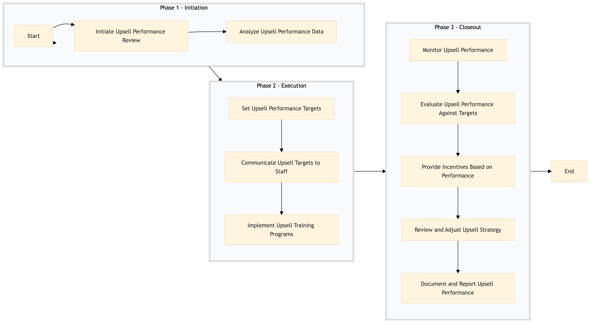

| Role | Steps |
|---|---|
| Revenue Manager | 1.1 1.2 2.1 2.2 2.3 3.1 3.2 3.3 3.4 3.5 |
| Front Desk Agent | 2.2 2.3 3.1 3.2 3.3 |
| Step | Name | Role | System | Input | Output | KPI | Dec? | Exc? | Pain Point / Risk |
|---|---|---|---|---|---|---|---|---|---|
| 1.1 | Initiate Upsell Performance Review | Revenue Manager | Oracle OPERA Cloud, IDeaS G3 RMS | Monthly sales data from Oracle OPERA Cloud | Upsell performance report | Report generated within 24 hours | N | Y | Data extraction and analysis can be time-consuming |
| 1.2 | Analyze Upsell Performance Data | Revenue Manager | Oracle OPERA Cloud, IDeaS G3 RMS | Upsell performance report | Upsell trends and insights | Analysis completed within 48 hours | N | Y | Interpreting data to identify actionable insights |
| 2.1 | Set Upsell Performance Targets | Revenue Manager | Oracle OPERA Cloud, IDeaS G3 RMS | Upsell trends and insights | Upsell performance targets for each department | Targets set within 7 days | N | Y | Balancing ambitious targets with realistic expectations |
| 2.2 | Communicate Upsell Targets to Staff | Revenue Manager, Front Desk Agent | Oracle OPERA Cloud, IDeaS G3 RMS | Upsell performance targets for each department | Training sessions and communication materials | Communication completed within 10 days | N | Y | Ensuring all staff understand the new targets |
| 2.3 | Implement Upsell Training Programs | Revenue Manager, Front Desk Agent | Oracle OPERA Cloud, IDeaS G3 RMS | Training sessions and communication materials | Upsell training program for staff | Training completed within 14 days | N | Y | Tailoring training to meet individual staff needs |
| 3.1 | Monitor Upsell Performance | Revenue Manager, Front Desk Agent | Oracle OPERA Cloud, IDeaS G3 RMS | Upsell training program for staff | Monthly upsell performance report | Report generated within 24 hours | N | Y | Data extraction and analysis can be time-consuming |
| 3.2 | Evaluate Upsell Performance Against Targets | Revenue Manager, Front Desk Agent | Oracle OPERA Cloud, IDeaS G3 RMS | Monthly upsell performance report | Upsell performance evaluation and feedback | Evaluation completed within 48 hours | N | Y | Interpreting data to identify areas for improvement |
| 3.3 | Provide Incentives Based on Performance | Revenue Manager, Front Desk Agent | Oracle OPERA Cloud, IDeaS G3 RMS | Upsell performance evaluation and feedback | Incentive program for high-performing staff | Incentives distributed within 7 days | N | Y | Balancing incentives with budget constraints |
| 3.4 | Review and Adjust Upsell Strategy | Revenue Manager, Front Desk Agent | Oracle OPERA Cloud, IDeaS G3 RMS | Incentive program for high-performing staff | Upsell strategy review and adjustments | Strategy reviewed within 10 days | N | Y | Ensuring the strategy remains effective over time |
| 3.5 | Document and Report Upsell Performance | Revenue Manager, Front Desk Agent | Oracle OPERA Cloud, IDeaS G3 RMS | Upsell strategy review and adjustments | Final upsell performance report | Report completed within 14 days | N | Y | Ensuring the report is comprehensive and accurate |
This process tracks upselling performance and provides incentives to staff at a Marriott full-service hotel using Oracle OPERA Cloud PMS.